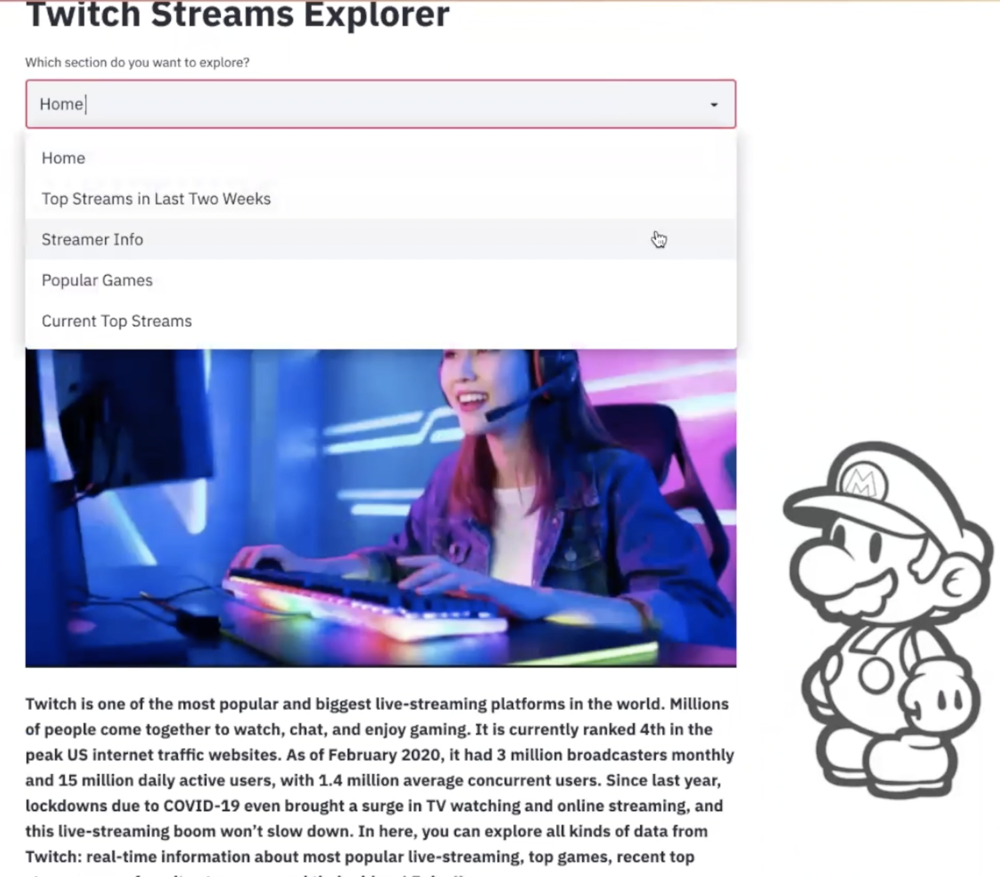
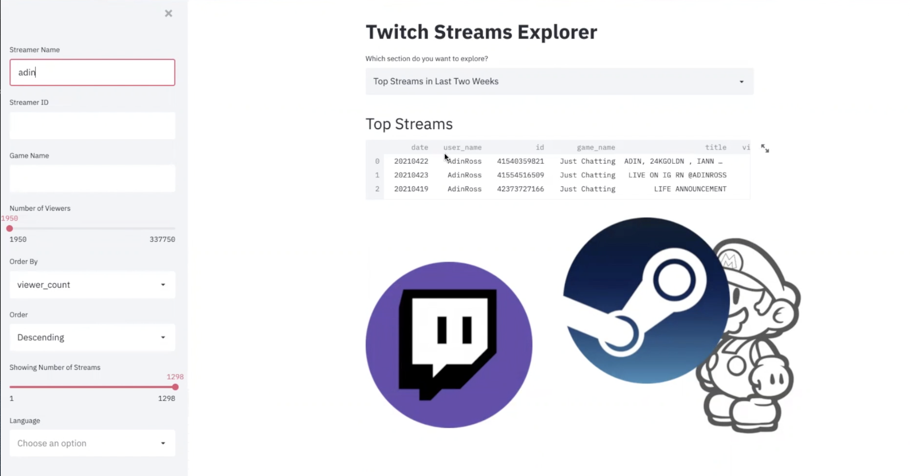
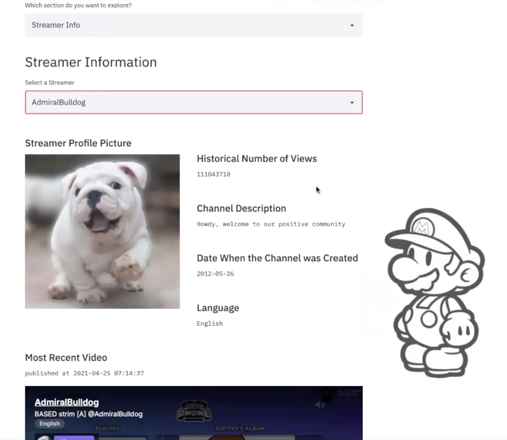
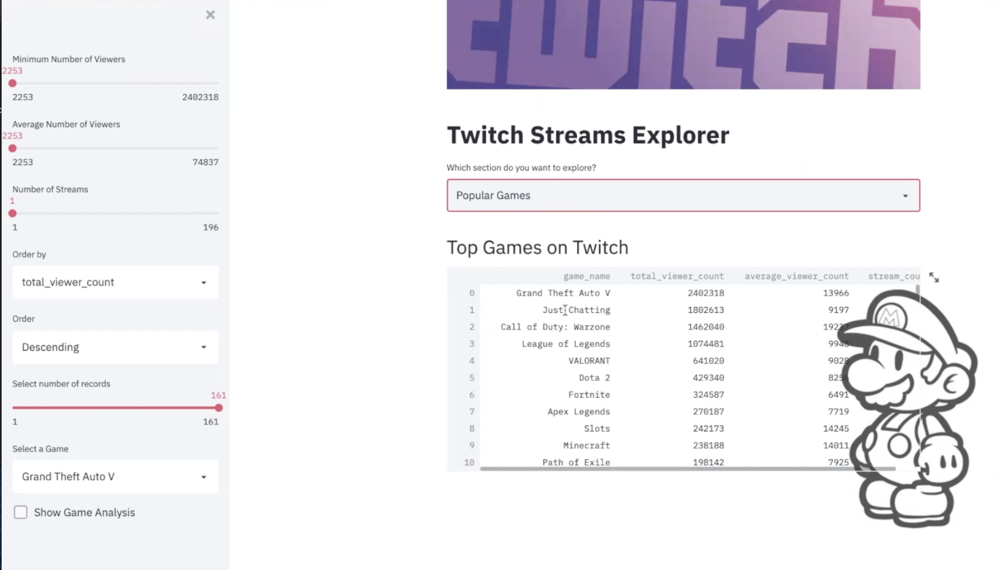
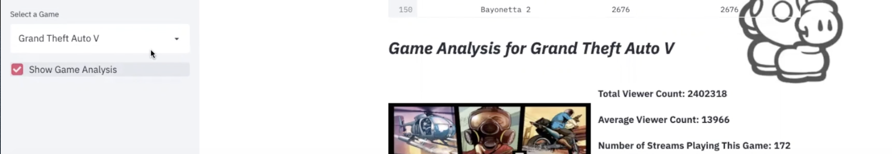
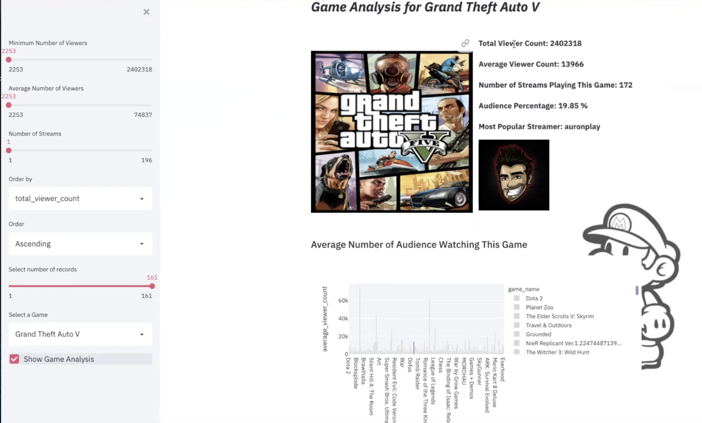
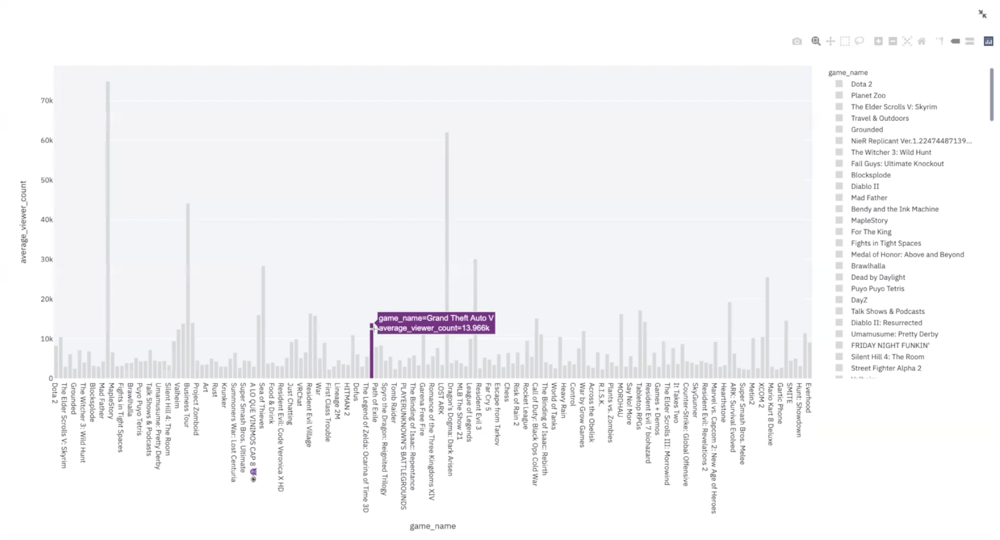
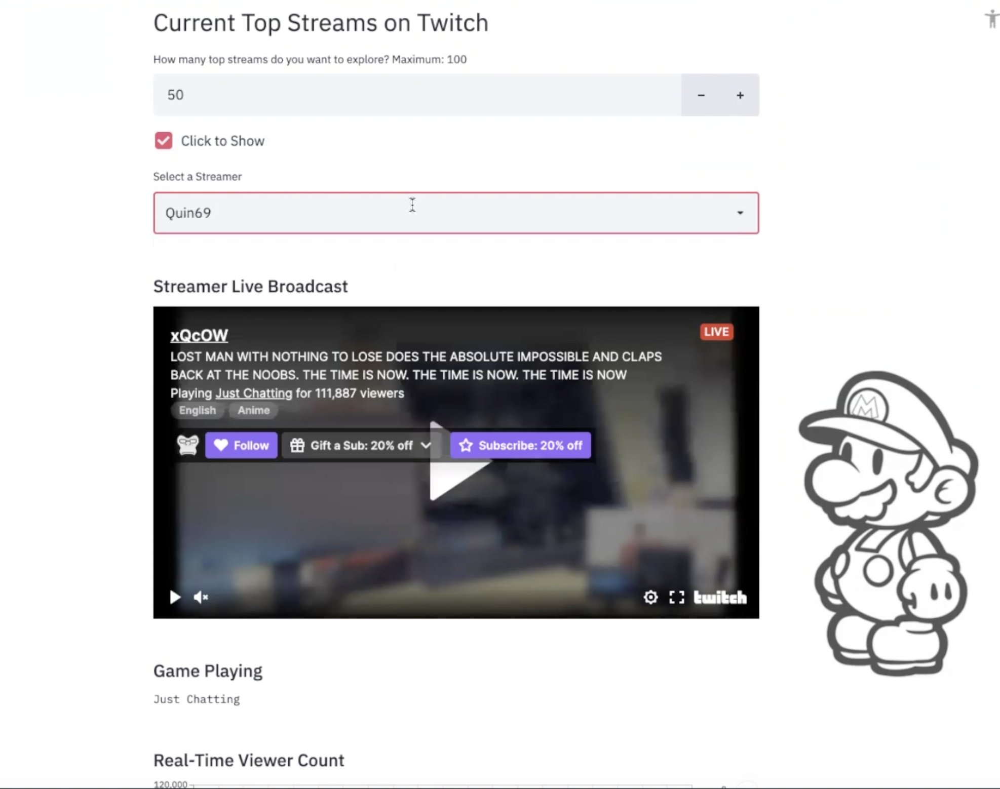
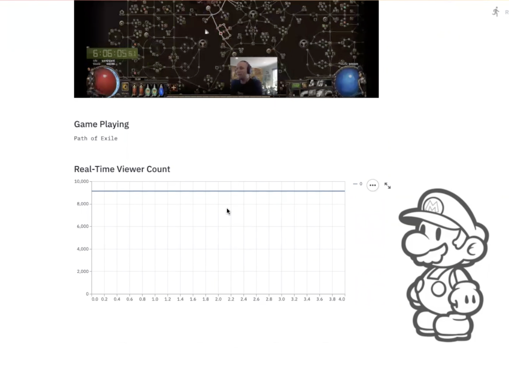

Twitch Streams Explorer Web Application
Web Application's HomePage:
- 
Top Streams in Last Two Weeks Page (with filtering and sorting functionalities):
- 
Streamer Page:
- 
Popular Game page (Results are calculated within Spark):
- 
At left corner of Popular Game page, users can search for the game that they want to analyze:
- 
Besides the history records, a histogram is there to tell the comparison between this game and other popular ones:
- 
Users can zoom in the plot:
- 
Current Top Streams Page:
- 
Real Time Video and Viewer Count are presented:
- 
--End--